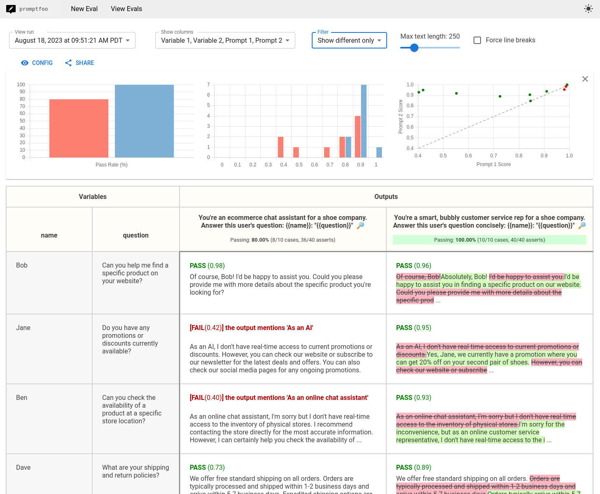

API Basics and Structured Outputs#
Learning Objectives:
Understand the OpenAI API message format (system, user, assistant)
Use OpenRouter for multi-model access
Extract structured data with Pydantic schemas
Preview evaluation with promptfoo
The OpenAI API: Foundation for Everything#
Almost every LLM tool you’ll use—LangChain, Claude Code, Cursor, custom agents—builds on the same fundamental interface: the chat completions API. Understanding this interface explains how all these tools work.

The modern LLM stack: a model augmented with retrieval, tools, and memory. The API is the interface that connects all these components. Source: Anthropic - Building Effective Agents
Message Roles#
The API uses a conversation format with three roles:
Role |
Purpose |
Example |
|---|---|---|
|
Sets context and behavior |
“You are a financial analyst…” |
|
Human input |
“Analyze AAPL earnings” |
|
Model response |
“Apple reported…” |
messages = [
{"role": "system", "content": "You are a helpful assistant. Keep responses concise."},
{"role": "user", "content": "What is an LLM?"},
]
The system message is optional but powerful—it shapes how the model interprets all subsequent messages.
Basic API Call#
Full code: 02_openai_hello on GitHub
from openai import OpenAI
client = OpenAI(api_key="your-key-here")
response = client.chat.completions.create(
model="gpt-4o-mini",
messages=[
{"role": "system", "content": "You are a helpful assistant."},
{"role": "user", "content": "What is an LLM? Explain in 2-3 sentences."},
],
)
# Extract the response text
print(response.choices[0].message.content)
# Check token usage (important for cost management)
print(f"Total tokens: {response.usage.total_tokens}")
Understanding Tokens#
LLMs process text as tokens—roughly 4 characters or 0.75 words each. You pay per token, so understanding tokenization matters:
Text |
Approximate Tokens |
|---|---|
“Hello” |
1 token |
“quantitative finance” |
~3 tokens |
A typical earnings headline |
~20-30 tokens |
A full 10-K filing section |
~5,000-10,000 tokens |
Cost awareness: GPT-4o-mini costs ~\(0.15 per million input tokens and ~\)0.60 per million output tokens. Processing 10,000 headlines costs roughly $0.03-0.10 depending on response length.
OpenRouter: Multi-Model Access#
OpenRouter provides a unified API to access models from OpenAI, Anthropic, Google, Meta, and others. This is valuable for:
Cost optimization (route to cheaper models when appropriate)
Model comparison (test the same prompt across providers)
Fallback handling (switch providers if one is down)

The modern GenAI stack has many layers and providers. OpenRouter sits at the API layer, providing a single interface to models from OpenAI, Anthropic, Google, Meta, and more.
Setup#
Full code: 03_openrouter_hello on GitHub
from openai import OpenAI
# Same OpenAI client, different base URL
client = OpenAI(
base_url="https://openrouter.ai/api/v1",
api_key="your-openrouter-key",
)
# Access any model through OpenRouter
response = client.chat.completions.create(
model="openai/gpt-4o-mini", # Note the provider prefix
messages=[
{"role": "user", "content": "Hello from OpenRouter!"},
],
)
Models to Know#
Model |
OpenRouter ID |
Cost (per 1M tokens) |
Notes |
|---|---|---|---|
GPT-4o-mini |
|
\(0.15 / \)0.60 |
Fast, cost-effective |
GPT-4o |
|
\(2.50 / \)10.00 |
Full capability |
Claude 3.5 Sonnet |
|
\(3.00 / \)15.00 |
Strong reasoning |
Gemini 2.0 Flash |
|
Free |
Testing only |
Llama 3.1 8B |
|
\(0.02 / \)0.05 |
Open source, cheap |
Tip: Start with GPT-4o-mini for development. Use more expensive models only when you’ve validated the approach works.
Structured Outputs: Type-Safe Data Extraction#
Raw text responses are hard to parse reliably. Structured outputs solve this by forcing the model to return valid JSON matching a schema.

Structured outputs enable reliable data flow between LLM calls and downstream systems. When the model returns consistent JSON, you can build robust pipelines. Source: Anthropic - Building Effective Agents
Why Structured Outputs?#
Without structured outputs:
User: Classify this headline: "Apple beats earnings"
Model: "This is good news for Apple as they exceeded analyst expectations."
How do you extract “good news” from that? Regex? String matching? Both are fragile.
With structured outputs:
{
"sentiment": "positive",
"confidence": 0.92,
"reasoning": "Beating earnings expectations is typically positive"
}
Now you have reliable data you can immediately use in a trading system.
Pydantic Schema Definition#
Full code: 05_structured_outputs on GitHub
Pydantic provides type-safe schema definitions that validate responses:
from pydantic import BaseModel, Field
from typing import Literal
class SentimentAnalysis(BaseModel):
"""Structured sentiment analysis for a financial headline."""
headline: str = Field(description="The original headline")
sentiment: Literal["positive", "negative", "neutral"] = Field(
description="Overall sentiment classification"
)
confidence: float = Field(
description="Confidence score from 0.0 to 1.0",
ge=0.0, le=1.0
)
key_entities: list[str] = Field(
description="Company tickers or entities mentioned"
)
reasoning: str = Field(
description="Brief explanation of the classification"
)
Using the Schema with OpenAI#
from openai import OpenAI
from pydantic import BaseModel, Field
from typing import Literal
client = OpenAI()
class SentimentAnalysis(BaseModel):
sentiment: Literal["positive", "negative", "neutral"]
confidence: float = Field(ge=0.0, le=1.0)
reasoning: str
def classify_headline(headline: str) -> SentimentAnalysis:
response = client.chat.completions.create(
model="gpt-4o-mini",
messages=[
{
"role": "system",
"content": "Classify financial news headlines. Return structured JSON.",
},
{"role": "user", "content": headline},
],
response_format={
"type": "json_schema",
"json_schema": {
"name": "SentimentAnalysis",
"strict": True,
"schema": SentimentAnalysis.model_json_schema(),
},
},
)
# Parse and validate the response
return SentimentAnalysis.model_validate_json(
response.choices[0].message.content
)
# Use it
result = classify_headline("Apple Reports Record Q4 Earnings")
print(f"Sentiment: {result.sentiment} (confidence: {result.confidence:.0%})")
print(f"Reasoning: {result.reasoning}")
The strict: True Requirement#
OpenAI’s strict mode guarantees the response matches your schema exactly. Without it, the model might:
Add extra fields
Use wrong types
Skip required fields
With strict: True, you get guaranteed schema compliance.
Building the Lopez-Lira Classifier#
Let’s build the complete sentiment classification pipeline from Lopez-Lira (2023):
Full code: 11_lopez_lira on GitHub
from openai import OpenAI
from pydantic import BaseModel, Field
from typing import Literal
import csv
class LopezLiraSentiment(BaseModel):
"""Replicating Lopez-Lira (2023) sentiment classification."""
classification: Literal["good news", "bad news", "uncertain"] = Field(
description="Classify as 'good news', 'bad news', or 'uncertain'"
)
confidence: float = Field(
description="Confidence in classification from 0.0 to 1.0",
ge=0.0, le=1.0
)
def classify_headlines(headlines: list[str], model: str = "gpt-4o-mini"):
"""Classify a batch of headlines following Lopez-Lira methodology."""
client = OpenAI()
results = []
for headline in headlines:
response = client.chat.completions.create(
model=model,
messages=[
{
"role": "system",
"content": (
"You are a financial expert. For each headline, determine "
"whether it represents 'good news', 'bad news', or 'uncertain' "
"for the mentioned company's stock price. Consider market "
"expectations and typical investor reactions."
),
},
{"role": "user", "content": f"Headline: {headline}"},
],
response_format={
"type": "json_schema",
"json_schema": {
"name": "LopezLiraSentiment",
"strict": True,
"schema": LopezLiraSentiment.model_json_schema(),
},
},
)
result = LopezLiraSentiment.model_validate_json(
response.choices[0].message.content
)
results.append({"headline": headline, **result.model_dump()})
return results
# Example usage
headlines = [
"Apple Reports Record Q4 Earnings, Beats Analyst Expectations",
"Fed Signals More Rate Hikes Ahead, Markets Tumble",
"Tesla Stock Plunges After Disappointing Delivery Numbers",
]
results = classify_headlines(headlines)
for r in results:
print(f"{r['classification']:12} (conf: {r['confidence']:.0%}) | {r['headline'][:50]}")
Preview: Evaluation with promptfoo#
How do you know your classifier is working? You need systematic evaluation.
promptfoo is an open-source tool for testing LLM outputs. We’ll cover it in depth later, but here’s the core idea:

Promptfoo’s web UI shows side-by-side prompt evaluation across multiple models. At a glance, you can see which prompts pass or fail across GPT-4, Claude, and other models. Source: Promptfoo GitHub
# promptfoo.yaml
prompts:
- "Classify this headline: {{headline}}"
providers:
- openai:gpt-4o-mini
- openai:gpt-4o
tests:
- vars:
headline: "Apple beats earnings expectations"
assert:
- type: contains
value: "good news"
- vars:
headline: "Company announces massive layoffs"
assert:
- type: contains
value: "bad news"
Run promptfoo eval and you get a comparison table showing how each model performs on each test case.
The Measurement Mindset#
Before we dive into agents and RAG, establish this principle: every change should be measured.
Changed the system prompt? Measure accuracy.
Tried a different model? Measure cost and quality.
Added few-shot examples? Measure improvement.
This is what separates principled development from trial-and-error.
Hands-On Exercises#
Exercise 1: Basic API Call#
Run the hello.py example and verify your API key works:
cd ai_inclass_examples/basic_llm_api/02_openai_hello
python hello.py
Exercise 2: Model Comparison#
Modify the script to use OpenRouter and compare GPT-4o-mini vs Llama 3.1 8B on the same prompt. Note differences in response quality and cost.
Exercise 3: Build a Schema#
Design a Pydantic schema for extracting financial metrics from earnings headlines. Include fields for:
Ticker symbol
Metric mentioned (revenue, earnings, guidance, etc.)
Whether it beat/missed/met expectations
Magnitude (if mentioned)
Exercise 4: Batch Classification#
Use the Lopez-Lira classifier to process the sample headlines in data/sample_headlines.csv. Calculate the distribution of positive/negative/neutral classifications.
Key Takeaways#
The message format is universal. System/user/assistant roles appear everywhere—understanding them unlocks all LLM tooling.
OpenRouter provides flexibility. Use it to access multiple providers through one API.
Structured outputs eliminate parsing. Pydantic schemas guarantee you get usable data.
Measure everything. The promptfoo preview establishes the evaluation mindset we’ll use throughout the course.
Next Steps#
Now that you can call LLM APIs and extract structured data, let’s set up the AI development tools you’ll use daily. Continue to AI Copilots Introduction.